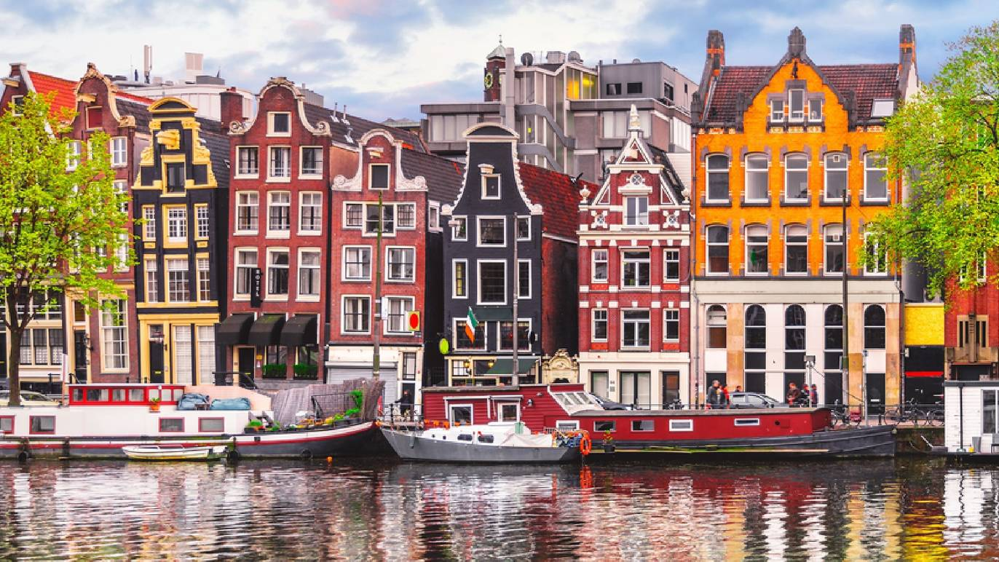

<html>

<head>
    <meta charset="utf-8">
    <link rel="stylesheet" href="content.css">
    <title>jQuery</title>
</head>

<body>
    <!-- <div class="container">
        <table>
            <thead>
                <tr>
                    <th>Column 1</th>
                    <th>Column 2</th>
                </tr>
            </thead>
            <tbody>
                <tr>
                    <td>Amsterdam is the Netherlands’ capital, known for its artistic heritage, elaborate canal system and narrow houses with gabled facades, legacies of the city’s 17th-century Golden Age. Its Museum District houses the Van Gogh Museum, works by Rembrandt and Vermeer at the Rijksmuseum, and modern art at the Stedelijk. Cycling is key to the city’s character, and there are numerous bike paths.</td>
                    <td></td>
                </tr>
                <tr>
                    <td>Cell 1</td>
                    <td>Cell 2</td>
                </tr>
            </tbody>
        </table>
    </div> -->

</body>

<script src="https://ajax.googleapis.com/ajax/libs/jquery/3.1.0/jquery.min.js"></script>
<script src="script.js"></script>

</html>